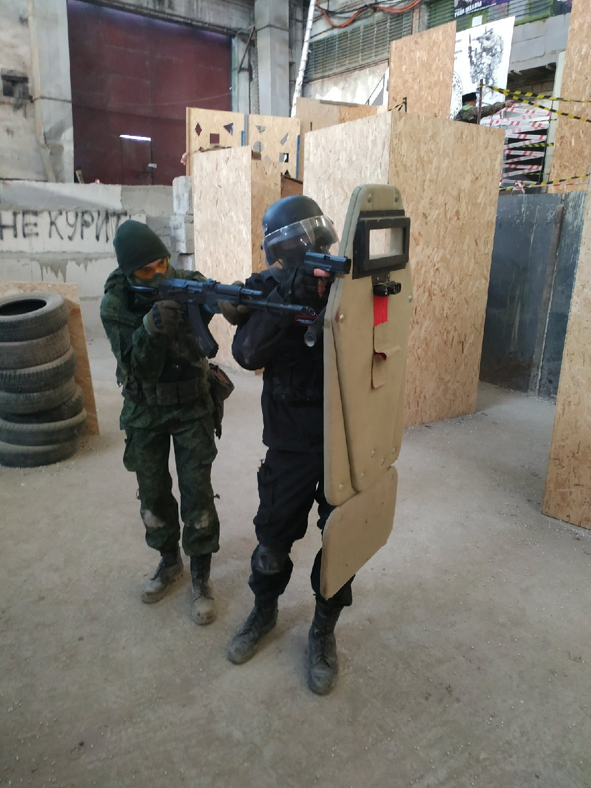

Моя история
Родился в городе Краснодар. Окончил МБОУ СОШ №70 г. Краснодара.
Получил музыкальное образование в ДШИ “Родник”. В 2020 году поступил в ЮФУ ИКТИБ МОП ЭВМ. На данный момент обучаюсь в этом ВУЗе на 1-ом курсе.
Занимаюсь программированием с 2019 года
Хобби
Увлекаюсь игрой на фортепиано, программированием, чтением книгами, страйкболом, мотоциклами.
